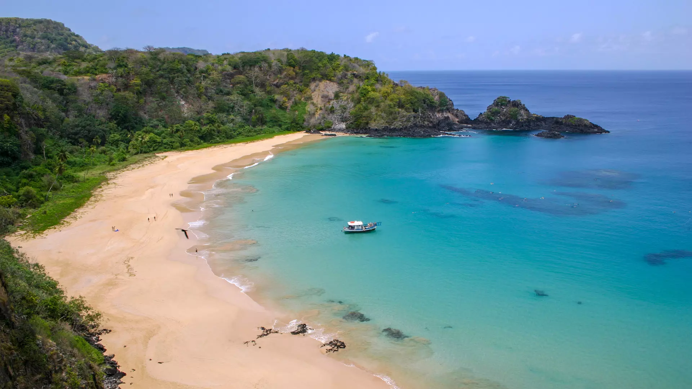
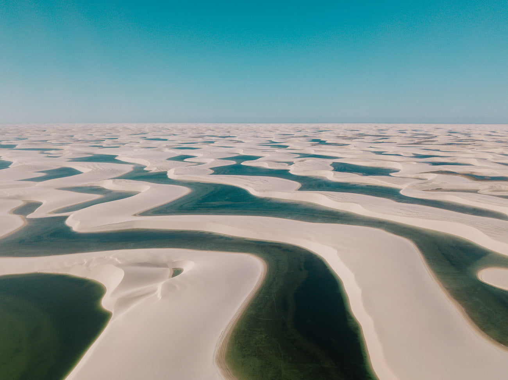
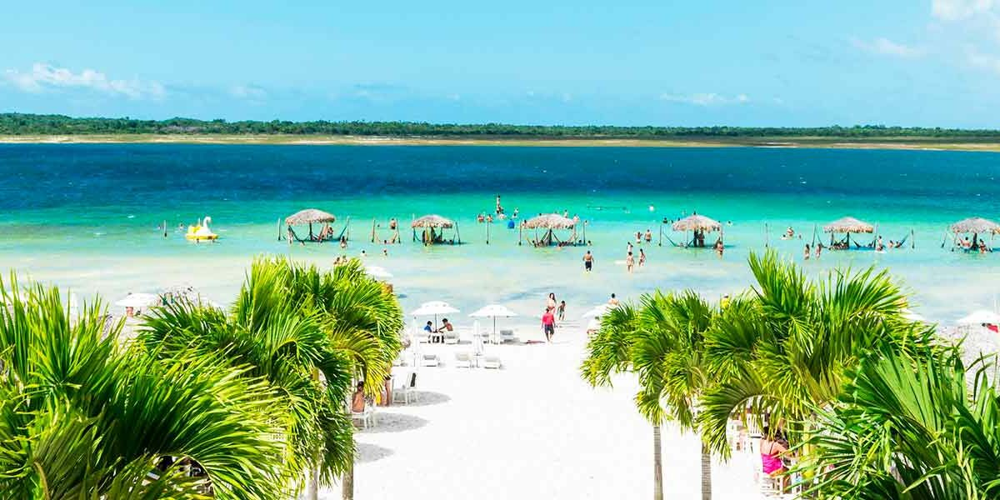
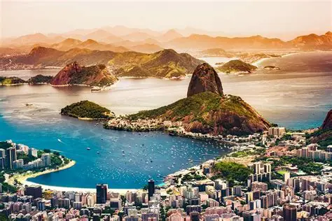
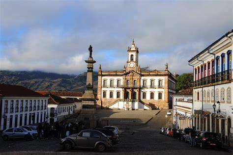
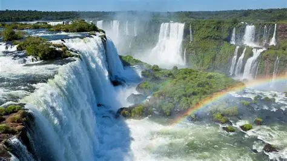
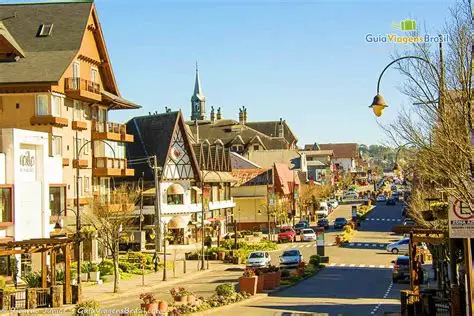
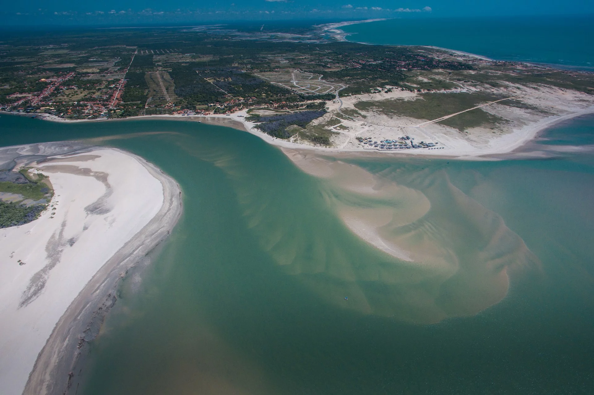
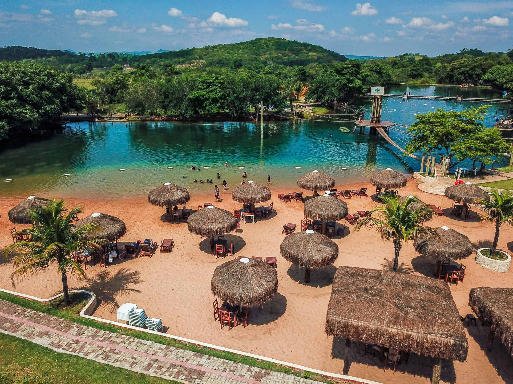
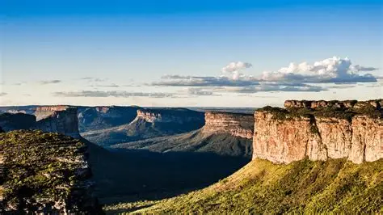

Explore o Brasil
Nordeste Brasileiro

Fernando de Noronha – PE
Arquipélago paradisíaco com águas cristalinas, golfinhos e mergulho de tirar o fôlego.
🌊 Ilha
Lençóis Maranhenses – MA
Dunas brancas e lagoas de água doce formam uma paisagem única no mundo.
🏜️ Dunas
Jericoacoara – CE
Vila de pescadores transformada em destino mundial com ventos para kite e pôr do sol inesquecível.
🌅 PraiaSudeste Brasileiro

Rio de Janeiro – RJ
A Cidade Maravilhosa: Cristo Redentor, Pão de Açúcar, praias famosas e carnaval único.
🏙️ Metrópole
Ouro Preto – MG
Patrimônio da Humanidade com arquitetura barroca, museus e a história do ouro brasileiro.
🏛️ HistóriaSul do Brasil

Cataratas do Iguaçu – PR
Uma das maiores quedas d'água do mundo, cercada pela Mata Atlântica preservada.
🌊 Natureza
Gramado – RS
Cidade com clima europeu, chocolates artesanais, Festival de Cinema e o Natal Luz.
❄️ Frio & CharmeNorte do Brasil

Encontro das Águas – AM
Fenômeno natural em que o Rio Negro e o Solimões correm juntos sem se misturar por quilômetros.
🌿 AmazôniaCentro-Oeste

Bonito – MS
Rios de águas límpidas, grutas, cavernas e ecoturismo sustentável de primeiro nível.
🐟 Ecoturismo
Chapada dos Veadeiros – GO
Cerrado preservado com cachoeiras impressionantes, trilhas e energia da natureza.
🏞️ Cerrado